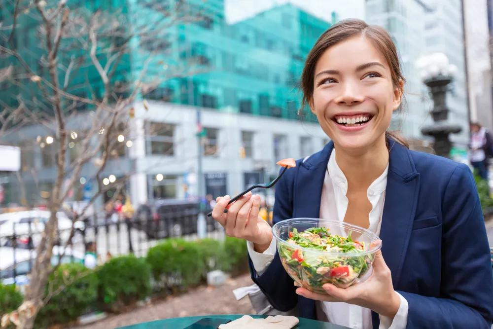

Healthy On-The-Go Dinner Ideas

Life gets busy, we get it! But when you’re on the go, whether that is heading to your shift at work, taking the kids to soccer practice, or attending an appointment, it’s easy to give in to the convenience of fast food. Sure, fast food meals are convenient but they are certainly not healthy, chock-full of extra calories, fat, and sodium, and low in essential nutrients that your body really needs. So, we’re here to help! The next time you have a busy day consider prepping your dinner ahead and take it with you on the go. Being prepared will help prevent poor food choices and make you less likely to give in to cravings.
Salmon Cakes
Tired of chicken and beef? Switch up your protein and give these salmon cakes a try! They’re easy to whip together and can be easily eaten on the go. Sure you can buy frozen salmon patties at the store but this recipe is made with whole food ingredients, rich in fiber, and can be ready in just minutes!
Along with cooked salmon, you’ll also need 2 eggs, shredded vegetables, coconut flour, and a few herbs and spices. The recipe also provides instructions on how to cook the salmon cakes in the air fryer, oven, and stovetop.
Broccoli and Quinoa Cakes
Patties are easy to eat on the go which is why they’re such a great idea. Be sure to add these broccoli and quinoa cakes to your busy-week rotation. These patties are made with healthy ingredients like quinoa, broccoli, and onion. They also contain egg and cheese for added protein.
Rainbow Veggie Wraps
Need a quick and easy dinner for you and the kids to enjoy on the go? These rainbow veggie wraps are not only delicious but kid-friendly too! Filled with fresh veggies, cheese, and hummus, they’re colorful and packed with nutrients that are good for you.
Simply spread hummus on a whole grain tortilla and top with cheddar, spinach, and assorted veggies. Roll up the wrap, cut it into pinwheels and pack them away to enjoy for dinner. The recipe says you can take these up a notch by serving them with store-bought green goddess dressing.
Broccoli Cheddar Soup Mini Pies
It’s no secret that soup is delicious and can be the perfect comfort food on a dreary day or when you’re feeling under the weather. But when you’re on your feet all day, soup isn’t the most practical meal to eat. That’s where these mini pies come in!
This recipe puts a fun spin on a traditional broccoli cheddar soup and serves the same delicious ingredients in a flaky pastry. Walking and enjoying soup has never been easier!
Taco Salad in a Jar
Salads can either be fun or really boring — it’s all about what ingredients you include! Taco salad is anything but boring, filled with nutrient-dense (and tasty!) ingredients like black beans, lean ground beef, avocado, and mixed greens. This recipe also shares a delicious salad dressing idea that helps make the salad extra delicious.
The fun thing about salad is you can include any ingredients you want to tailor it to your liking. Layer the ingredients in a mason jar but be sure to put the dressing in the bottom and add the greens and crushed corn chips in the morning to ensure they don’t go soggy. Toss this salad in your travel bag and when you’re ready to eat give the jar a good shake and enjoy!
Lasagna Cups
Lasagna might not be the first thing that comes to mind when you think about on-the-go dinners. However, this recipe puts a clever twist on a traditional recipe and introduces lasagna cups — much easier to eat on the go!
This recipe also puts a healthy spin on lasagna by opting for ingredients like lean ground turkey, part-skim mozzarella cheese, and part-skim ricotta cheese. You could also add in more nutrients by adding a few chopped veggies to the mix. The recipe also swaps traditional lasagna noodles for wonton wrappers which help make assembling, cooking, and baking a lot faster.
Vegetable Burrito Bowl
Whether you’re vegetarian or enjoy throwing in a few plant-based meals per week, you’ve got to add these vegetable burrito bowls to the mix. The recipe recommends using up vegetables from your fridge and customizing the bowls to include veggies you enjoy. Some great additions may include peppers, onions, sweet potato, and corn.
The recipe recommends roasting all the veggies in the oven on a sheet pan with a drizzle of olive oil and a sprinkle of a few spices. Combine the roasted veggies with a scoop of cooked rice and top the dish with a dollop of sour cream and chopped avocado.
Turkey Bolognese With Zucchini Noodles
Vegetable noodles are a fun and easy way to make your meal low carb. Skip the pasta and try zoodles (zucchini noodles). All you need is a vegetable spiralizer or you can opt for the store-bought zucchini noodles.
This recipe combines the zoodles with a quick and easy turkey meat sauce and a sprinkle of parmesan. Prepare this meal ahead and enjoy it on the go. Simply reheat in the microwave for 2- to 3-minutes and Enjoy!
Mediterranean Quinoa Salad
Switch up your typical leafy green salad for a quinoa salad — just as delicious and filling! This recipe puts a Mediterranean spin on this salad by combining quinoa with kalamata olives, feta cheese, and fresh veggies. The dressing is easy too, made with olive oil, red wine vinegar, balsamic vinegar, and a few spices.
Simply prep this salad the night before and toss it in a jar to take with you on the go. You can even give this salad a protein boost by adding cooked chicken, salmon, or chickpeas.
Caprese Pizza Muffins
Sure you could pack a Caprese salad, or you can combine two popular favorites to make one delicious dinner. Skip the greasy pizza from the local pizzeria and opt for these healthier Caprese pizza muffins .
You’ll also enjoy that these pizza muffins come together in under 20-minutes. Simply form the dough in a muffin tin then top it with pizza sauce, fresh mozzarella, cherry tomatoes, and fresh basil. The finishing touch is the balsamic glaze drizzle which provides that authentic Caprese flavor.
Edamame Feta Salad
This edamame feta salad recipe is another great meat-free dinner idea. But don’t worry, this salad will keep you feeling full and energized thanks to the edamame. Not only does it add a great texture to the salad, but edamame is chock full of protein and fiber which will help keep you satiated for a while.
The salad also consists of pepper, green onions, corn, and wheat berries, although the recipe says you can substitute the wheat berries for quinoa or quick-cooking brown rice if you’re short on time. Finish the salad with a simple dress of lemon and lime juice, olive oil, and a dash of salt, pepper, and cayenne. Prep this salad the night before and enjoy on-the-go the following day!
Crisp Tuna Cabbage Salad
You can never go wrong with a simple sandwich for dinner. But this recipe puts a crunchy, and healthier twist on a classic tuna salad. The secret is to only use a touch of mayonnaise and several tablespoons of Greek yogurt. The Greek yogurt helps make the tuna salad a little lighter and adds extra protein, which can help you feel full for longer.
The addition of finely chopped cabbage is what gives this tuna salad a nice crunch. To round out the flavors, you’ll only need a dash of black pepper and minced chives. Assemble the sandwich with your favorite type of bread and enjoy!
Source: https://activebeat.com/diet-nutrition/healthy-on-the-go-dinner-ideas/